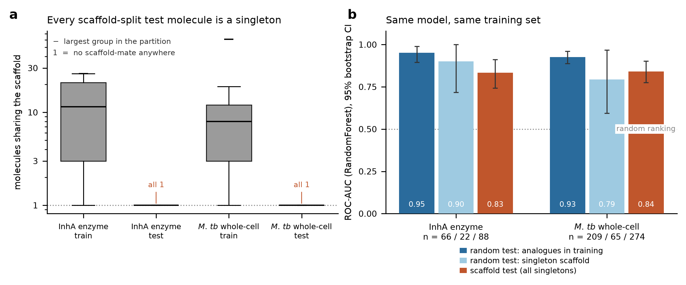
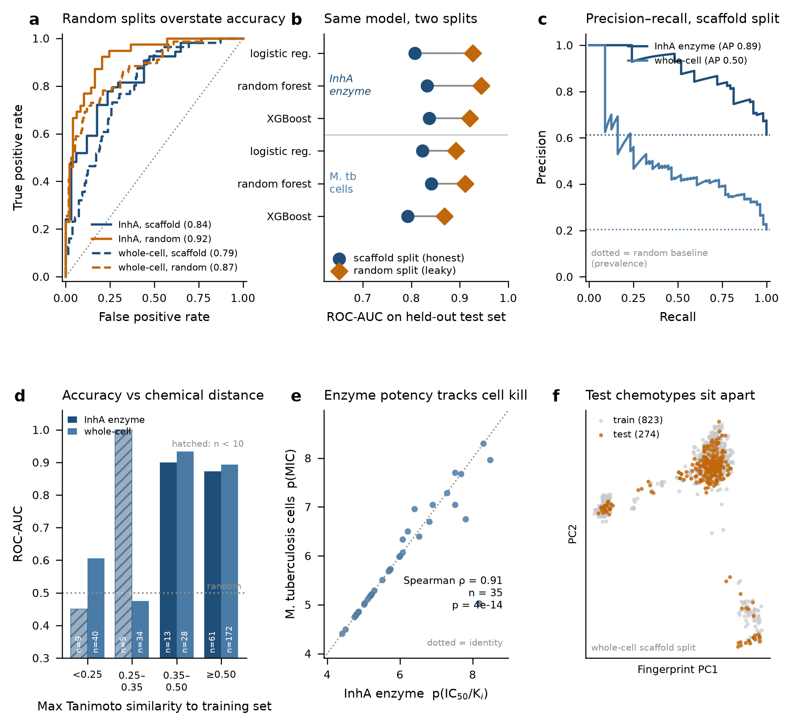
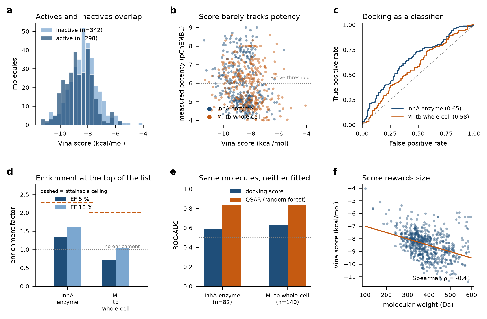
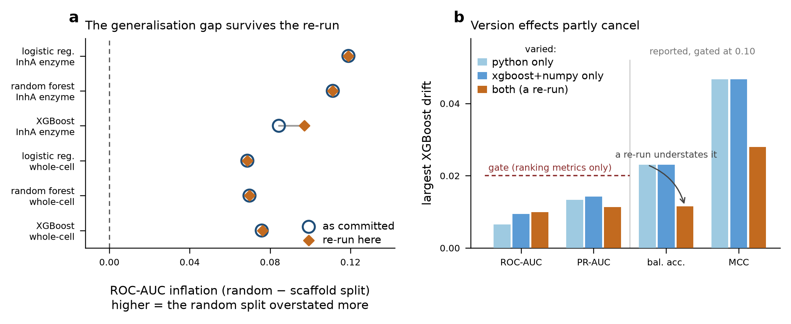
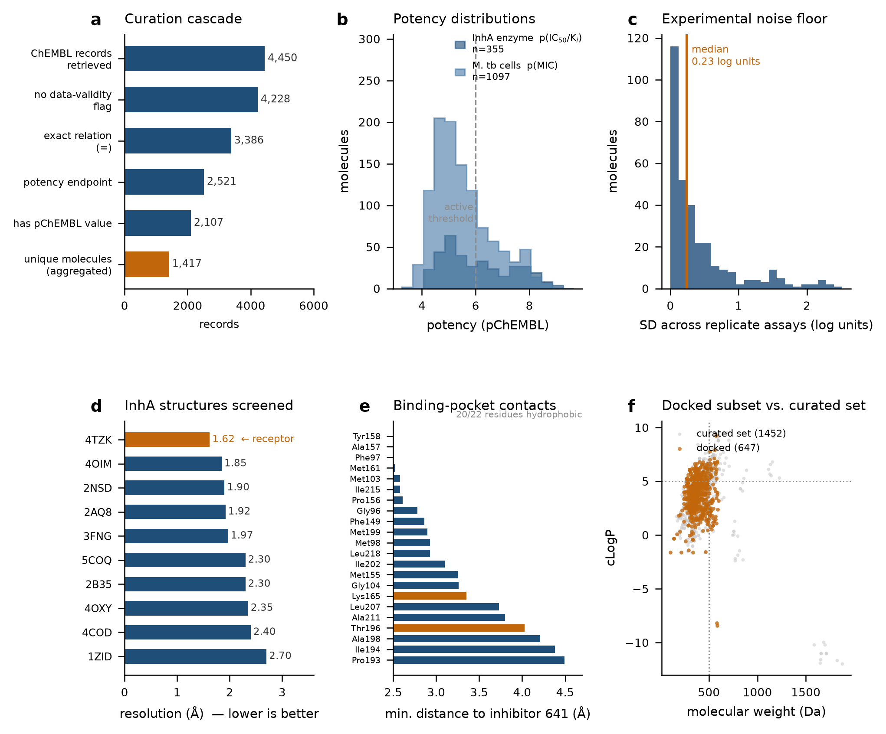

Bioinformatics analyst — computational drug discovery & reproducible omics pipelines
GitHub LinkedIn Email CV (PDF) Methods write-up
I try to break a result before I report it. Every project below states its controls first — what the negative control was, where the leakage could hide, what the number looks like once you close that door. Usually the honest number is lower, and that is the point.
Can a QSAR model trained on public InhA data pick new chemotypes — or is it just recognising analogues it has already seen?
2107 curated bioactivity records, 1417 unique molecules, across the InhA enzyme and M. tuberculosis whole-cell assays. Three model families, two split strategies. Docking validated first by redocking the co-crystallised ligand into 4TZK — RMSD 0.23 Å — because a docking score means nothing if the pose protocol cannot reproduce a known pose.
| Held-out ROC-AUC | scaffold split | random split | inflation |
|---|---|---|---|
| InhA enzyme (XGBoost) | 0.837 | 0.921 | +0.084 |
| M. tb whole-cell (RF) | 0.841 | 0.911 | +0.07 |
Across all six model×dataset combinations a random split overstates ROC-AUC by 0.069–0.119 (median 0.08). The cause is concrete: 29 and 89 Bemis–Murcko scaffolds appear on both sides of the random split. Every number quoted outside the full table is the scaffold-split one.





How much does each cross-validation leak actually inflate a reported AUC?
Four protocols — leaky feature selection, sample-level splits on patient-clustered data, preprocessing before the split, and a clean nested pipeline — run over three tasks and three public lung-cancer cohorts. The point is not that leakage exists; it is the size of the effect, measured per protocol, so a reviewer can tell which shortcut costs what.
How do variants of uncertain significance actually get resolved?
Two ClinVar releases 19 months apart, joined on variant identity, to measure which VUS move and in which direction. A reclassification rate is only interpretable against the denominator of variants that had the opportunity to move — so that denominator is constructed explicitly rather than assumed.
Are pathogenic missense variants enriched inside annotated conserved domains?
ClinVar missense variants mapped onto InterPro domain boundaries. The enrichment is tested against a length-matched background, because domains are not a random slice of the protein and an unmatched comparison would find enrichment whether or not it is there.
A QC pipeline that fails loudly instead of producing a plausible-looking report.
Nextflow, nf-core conventions, 42 tests covering the failure modes that matter — truncated reads, mismatched pair counts, empty inputs — because a QC pipeline that silently passes bad data is worse than no pipeline.
The projects above are my own work: verifiable, but self-reported. These were judged by someone else.
Two loading animations rendered at once. Which component owned the ellipsis?
Traced to the Vue.js LoadingSpan component, which appended an animated
ellipsis that callers were also supplying. I audited all 17 call sites referencing the
affected markup before proposing anything, because the fix had to leave the rendered
text unchanged for every one of them. Replacing the animation with static text leaves a
single indicator. Approved by a maintainer and merged into Galaxy's dev
branch, closing
issue #14275.
The citation check reported clean on every tutorial. Was it actually checking?
GTN:004's PubMed regex contained a doubled slash, so it had never matched a real link. The check was structurally incapable of failing. Measured before proposing a fix: 47 legacy-host and 3 modern-host links across 23 of 547 tutorials went unreported. Filed as issue #7092 with a 16-test Ruby suite; the patch is approved.
Module annotation wrote empty EDAM terms where a term existed. Why?
load_edam() built its map from a single column and held 67 extension
keys, so a missing key and a missing concept were indistinguishable — and a failed
download looked the same as both. Widening the lookup to labels and synonyms takes it
from 67 to 798 keys and recovers 513 channel elements across 184 modules. Filed as
issue #4468 with a 12-test pytest
suite; the pull request is open for review.
Chasing the nf-core defect: was the tooling wrong, or the ontology incomplete?
Both. EDAM records a file extension for only 61 of 612 live format concepts, and downstream tooling reads only that property. 74 tabix-index elements carry no annotation because EDAM holds two competing non-obsolete concepts for the same artefact. The 6 proposed extension values come from what module authors independently hand-wrote, not from assertion — the method reproduces EDAM's own curation on every extension it already records.
rnaseq-de-GSE60450 · scRNAseq-PBMC-Analysis · 16s-amplicon-report · inha-ai-docking-benchmark · ont-amr-nf · oss-contributions — upstream work on nf-core/tools and Galaxy training material.
M.Sc. Botany. Research internship at Inha University (South Korea) on the computational TB work above. Member of the nf-core GitHub organisation. Based in Baran, Rajasthan, India (IST).
Every number on this page is generated from the source data in the linked
repositories — the inha-tb figures and table come from
docs/facts.json, which the analysis writes and the write-up reads. No number
here is typed by hand.